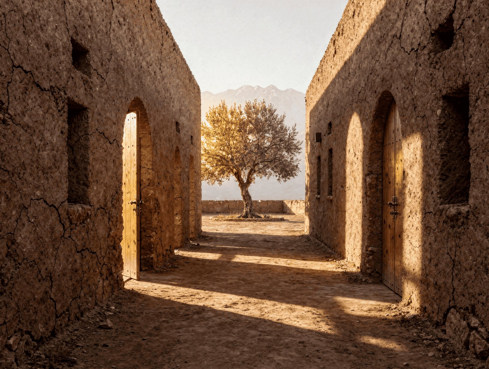
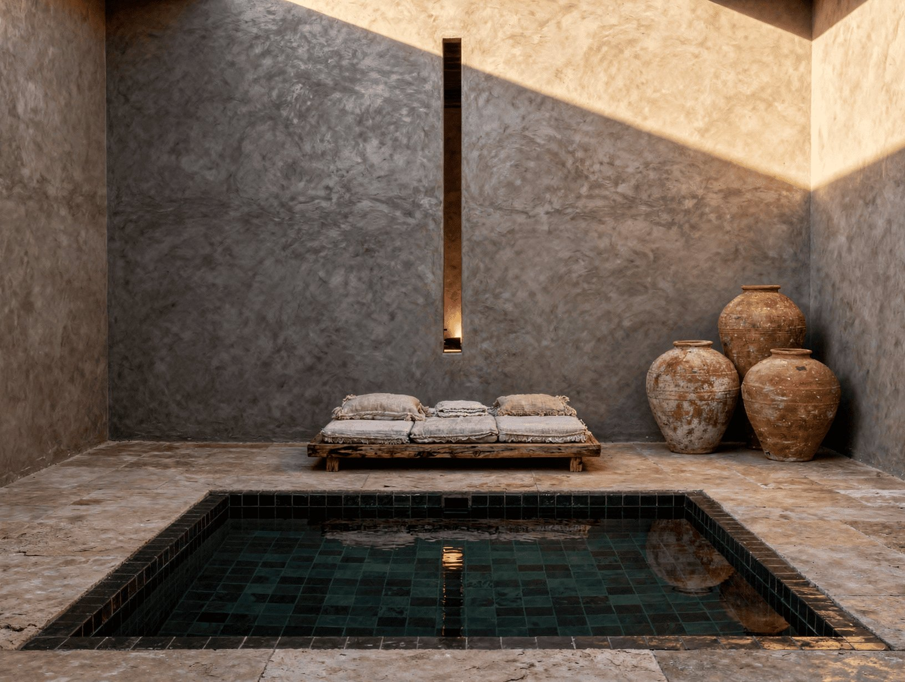
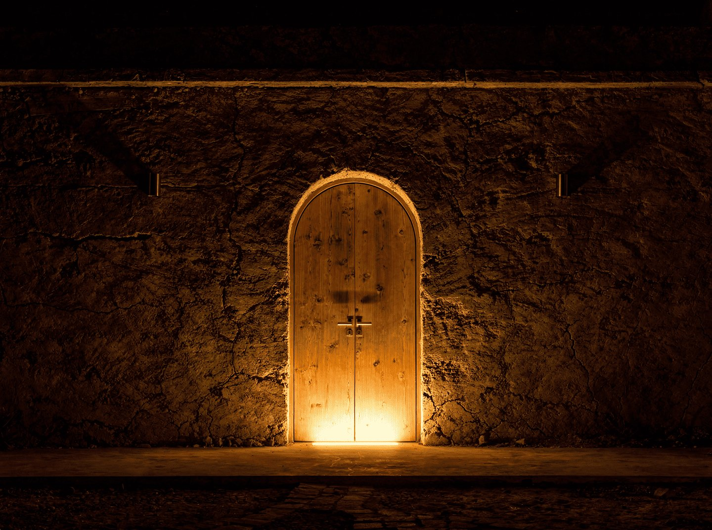

Chaque cluster regroupe 4 mini-riads autour d'un passage intérieur commun, logique de ksar, murs extérieurs aveugles, intimité par l'épaisseur du mur et non par la distance. Chaque cluster porte un programme unique qui lui est attaché. L'espace entre les clusters est le programme : le jardin, l'oliveraie, les chemins cairnés, le silence du Haouz.

4 mini-riads partagent un passage intérieur commun. Les murs extérieurs sont aveugles, une porte arquée en cèdre par unité, deux ouvertures étroites maximum. L'intimité est garantie par l'épaisseur du pisé, non par la distance. Le riad marocain était inventé pour les médinas denses : cette même logique s'applique ici, dans le Haouz.
Les murs partagés entre unités adjacentes génèrent des économies significatives de construction et réduisent les réseaux enterrés. Le cluster est l'unité constructive et opérationnelle de base.
20 unités maximum. Jamais plus. Le nombre est une contrainte artistique.
Chaque mini-riad est une enceinte fermée en pisé. L'extérieur est presque aveugle, une porte arquée en cèdre, deux ouvertures hautes et étroites au maximum. Rien ne trahit ce qui se passe à l'intérieur.
On pousse la porte : on entre dans un monde différent. Un jardin intérieur privé de 30m², arboré, avec une piscine en bassin de zellige foncé au centre. Autour, les espaces de vie s'ouvrent entièrement sur ce patio. Le salon, la chambre, la salle de bain. Tout vit vers l'intérieur. Le ciel est le seul horizon.
La piscine n'est pas un aménagement de jardin. Elle est structurellement intégrée au patio. Le bassin en zellige foncé (4×5m) reflète le ciel. Un daybed en cèdre le borde. Un olivier ou un grenadier pousse dans un angle. La nuit, les lanternes en laiton. Le silence.
C'est le principe du riad marocain réinterprété dans un langage contemporain et désertique. La richesse est dans l'espace, la lumière, la qualité des matières. Pas dans l'ostentation.
| Surface bâtie totale | 110 m² |
| Patio intérieur | 30 m² |
| Chambre + dressing cèdre | 45 m² |
| Salle de bain tadelakt | 20 m² |
| Salon / espace vie | 25 m² |
| Piscine bassin zellige | 4 × 5 m, 1,4m prof. |
| Fenêtres extérieures | Quasi-nulles |
| Structure | Pisé 50cm + béton brut |
| Finitions | Tadelakt, cèdre, zellige, pierre |
| Climatisation | Réversible encastrée, sur PV |
| Eau chaude | Solaire thermique + appoint PV |
| ADR blended | 650–950€ / nuit (moy. 800€) |
| Coût construction cluster | ~199 000€ / unité |
Chaque mini-riad est invisible depuis tous les autres. Depuis l'intérieur d'un patio, il est impossible de voir le patio d'une autre unité. Ce n'est pas une recommandation, c'est une condition sine qua non.

Le territoire change de nature après le coucher du soleil. Le Haouz est l'un des rares endroits, à 30 minutes d'une ville d'un million d'habitants, où les nuits sont vraiment noires. L'éclairage est minimal, rasant, dirigé vers le sol. Rien ne monte vers le ciel.

Montants établis sur la base des référentiels de coûts marocains (province Marrakech-Safi, 2025-2026), de devis indicatifs auprès d'entreprises spécialisées pisé et tadelakt, et des coûts constatés sur des projets hôteliers boutique comparables dans le Haouz. Provision aléas 6%, Gilles Leroy présent sur site en permanence. Direction artistique assurée en interne par les Leroy Brothers.
| Poste | Montant | Note |
|---|---|---|
| Construction principale | ||
| 12 mini-riads 1BR, modèle cluster, murs partagés | 2 390 000€ | ~199 000€ par unité |
| Bâtiment principal, rénovation 1 200m² | 700 000€ | Restaurant, galerie, réception, bar, rooftop |
| Autonomie et infrastructure | ||
| Système off-grid Phase 1, 3 clusters (PV, batteries, solaire thermique) | 90 000€ | Autonomie énergétique complète dès l'ouverture |
| Biodigesteur + traitement eau + citernes pluie | 80 000€ | Dimensionné pour 20 unités dès Phase 1 |
| Voiries, réseaux, portail, réfection mur clôture 1,6km | 120 000€ | Conduits Phase 2-3 inclus, creuser une fois |
| Provisions Phase 2-3 (conduits, zones réservées, connexions) | 43 000€ | Évite double intervention future |
| Zone de service presse hydraulique Les Compressions | 15 000€ | Presse acquise sur fonds opérationnels an 1 |
| Jardin Phase 1, oliveraie complémentaire, potager, clusters | 20 000€ | Sur existant, plantation complémentaire ciblée |
| Honoraires et frais | ||
| Architecte DPLG marocain, maîtrise d'œuvre (2%) | 67 000€ | Direction artistique Leroy Brothers en interne |
| Contrôle technique et coordination chantier | 20 000€ | |
| Notaire et frais juridiques acquisition foncière | 17 500€ | |
| GO SIYAHA, constitution société marocaine, conseil fiscal | 12 500€ | |
| Contingence | ||
| Provision aléas chantier (6%) | 204 000€ | Vs 10-15% standard pour maître d'ouvrage absent |
| Total construction | 3 809 000€ | |
| Hors construction | ||
| Acquisition foncière (5 ha, Titre Foncier, Route de Fès) | 700 000€ | Offre Willenbrock, confirmée |
| Budget lancement (stocks F&B, marketing, formation, fonds de roulement) | 250 000€ | Hors budget construction |
| Total tout compris, Phase 1 | 4 759 000€ | |